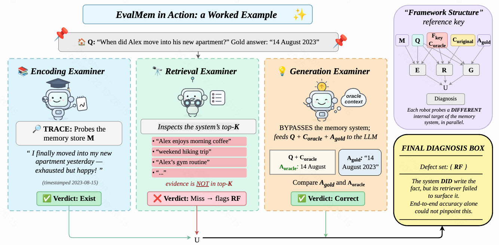

About Me
I am a first-year graduate student (2026–2029) at Zhejiang University, pursuing my Master’s degree in Artificial Intelligence advised by Prof. Qiang Zhang.
Research Interests 🔬
Diffusion Language Models: Exploring diffusion-based approaches to language modeling and generation.
Education 🎓

Zhejiang University
2026 – 2029
M.S. in Artificial Intelligence
Nankai University
2022 – 2026
B.E. in Software Engineering
Publications 📚
EMNLP 2026 Findings

EvalMem: An Operation-Level Diagnostic Framework for Long-Term Memory Systems
Zeyu Liu, Jian Zhong, Rongduo Han, Ziyang Wu, Shunye Tang, Chenghao He, Yaxuan Yang, Yihang Qiu, Ailing Wang, Xiao Liang, Guohuan Xie, Xiaokang Xue, Gongchen Li, Haining Zhang, and Wei Wang
[Paper] [arXiv] [Code]
Zeyu Liu, Jian Zhong, Rongduo Han, Ziyang Wu, Shunye Tang, Chenghao He, Yaxuan Yang, Yihang Qiu, Ailing Wang, Xiao Liang, Guohuan Xie, Xiaokang Xue, Gongchen Li, Haining Zhang, and Wei Wang
[Paper] [arXiv] [Code]
Honors and Awards 🏆
- 2025: National Scholarship
- 2024: Gong-Neng Scholarship of Nankai University
- 2024, 2025: Outstanding Student of Nankai University
- 2025: Migu M-Zone Grand Prize (3/1143, Top 0.3%)